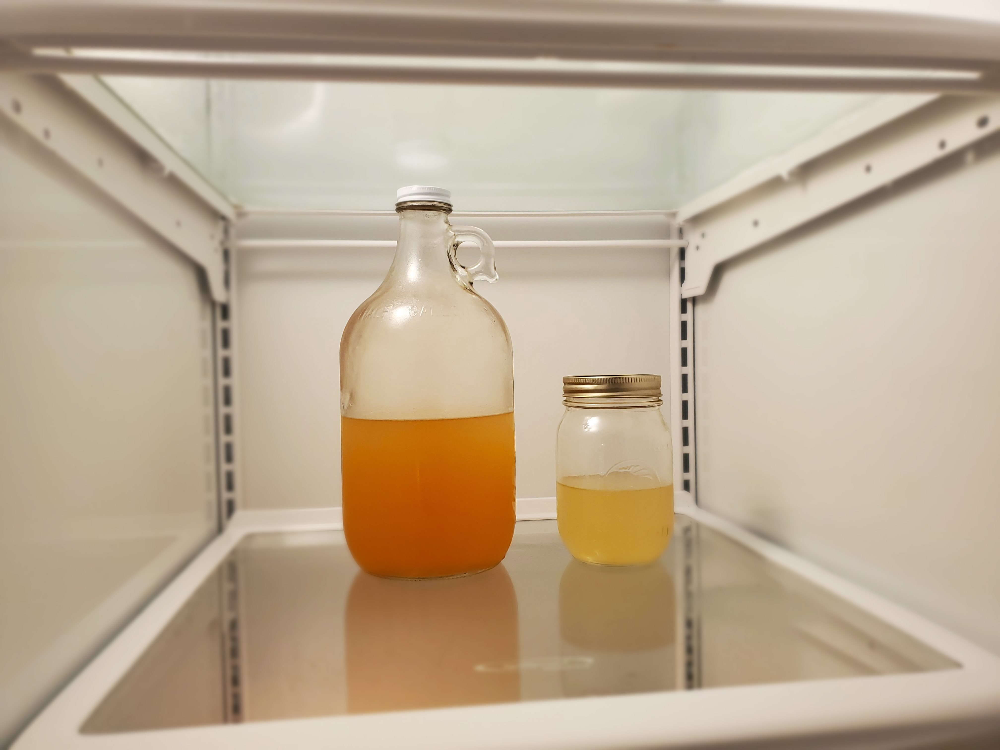

This is a recipe for "Gary's Bohemian Tea"
Ingredients
- Four cups of boiling water.
- Two cups of sugar.
- 14 Green tea bags tied together with a string.
- 18 tbsp. (1 cup + 2 tbsp.) of lemon juice from concentrate.
Directions
- Dissolve sugar in the boiling water, and remove the saucepan from the heat.
- Add the other ingredients, and brew for 20 minutes.
- Store the syrup in a glass jar in the refrigerator.
- When serving, use 1/3 cup of syrup, 2/3 cup cold water, and 2 ice cubes. (Sweeten to taste next time by using more or less sugar.)
Download Recipe